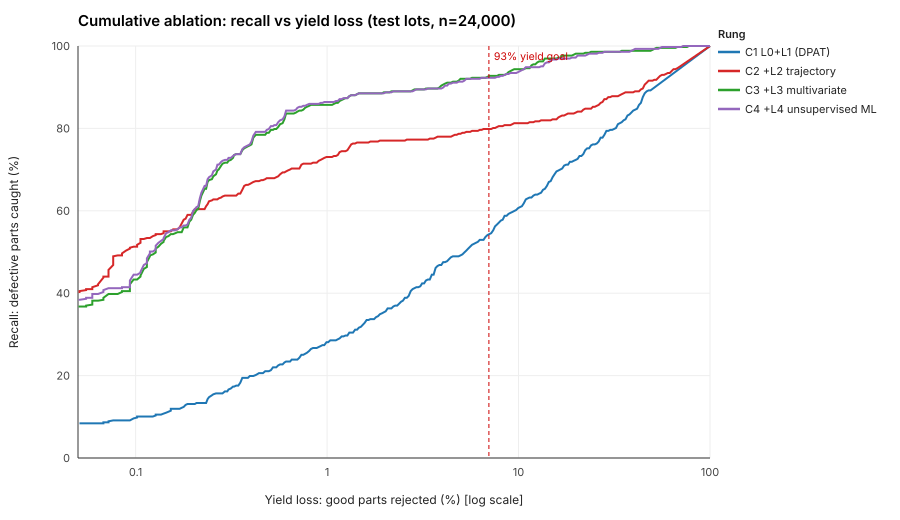
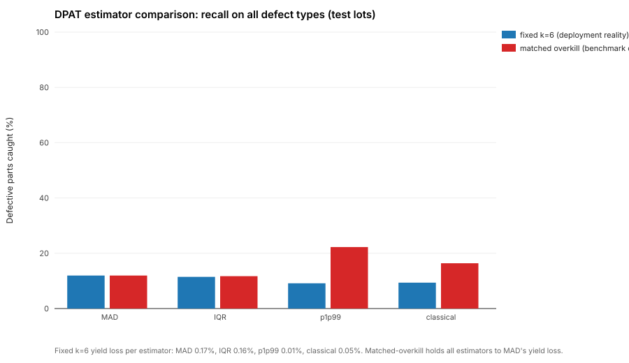

Chapter 3
Module A: screening each part against its own lot
A ladder of detectors, each rung asking a question the one below cannot. Every rung is measured on the same 48 unseen test lots at the same yield loss, so the comparison is fair.
The operating point
We report recall at 93% yield: the threshold is set so that exactly 7% of good test parts are rejected, and we count how many defective parts are caught. The threshold is computed on good parts only, so the budget really is yield loss. The 7% point is ITC 2020's reference; the 1% column shows the tighter regime a space-grade screen would use. Accuracy is never reported: at 1.75% prevalence, flagging nothing scores 98.25%.
The cumulative ladder
Each rung contains everything below it, fused at score level by taking the strongest normalised signal (max robust z against training-lot parts).
| Rung | Contains | Recall @ 93% yield | Escape rate | PR-AUC | Recall @ 1% yield loss |
|---|---|---|---|---|---|
| C0 | Static datasheet limits alone | n/a | 100.00% | n/a | n/a |
| C1 | + L1 dynamic PAT (AEC-Q001, MAD) | 54.33% | 45.67% | 0.258 | 28.1% |
| C2 | + L2 lot-relative drift features | 79.86% | 20.14% | 0.708 | 73.1% |
| C3 | + L3 robust multivariate | 92.74% | 7.26% | 0.798 | 85.7% |
| C4 | + L4 unsupervised ML | 92.27% | 7.73% | 0.803 | 86.4% |

Every method, head to head
| Rung | Method | Recall @ 93% | PR-AUC | AUROC | Recall, val-calibrated | Yield loss, val-calibrated |
|---|---|---|---|---|---|---|
| L1b | DPAT dynamic, MAD | 54.3% | 0.259 | 0.841 | 54.3% | 7.0% |
| L1a | DPAT static, MAD | 47.3% | 0.186 | 0.815 | 45.0% | 6.2% |
| L2 | Lot-relative drift + level | 79.2% | 0.705 | 0.890 | 78.5% | 6.4% |
| L3a | Mahalanobis + MCD | 64.6% | 0.378 | 0.860 | 63.0% | 6.5% |
| L3b | PCA T² | 89.0% | 0.779 | 0.941 | 89.0% | 6.8% |
| L3b-Q | PCA Q-residual | 81.3% | 0.632 | 0.909 | 80.6% | 6.5% |
| L3c | kNN distance | 86.4% | 0.816 | 0.937 | 86.2% | 6.5% |
| L4a | Isolation Forest | 67.7% | 0.194 | 0.876 | 65.1% | 6.5% |
| L4b | Autoencoder (MLP) | 89.5% | 0.844 | 0.964 | 89.5% | 6.6% |
| L4b′ | Local Outlier Factor | 90.2% | 0.882 | 0.958 | 90.2% | 7.3% |
| L4c | One-class SVM | 87.4% | 0.795 | 0.933 | 87.1% | 6.7% |
Finding: static limits scrap a shifted lot
When a batch shifts as a whole, fixed historical limits scrap perfectly good parts; limits recomputed from the lot itself absorb the shift. At a matched 7% yield budget the contrast is 59.1% against 5.7%. The 6σ row leads because 6σ is what the standard specifies and what actually gets deployed. This is an all-lots figure: the six shifted lots fall early in production order, and we did not move the split to make it a test number.
Finding: the centre-hider is invisible to every univariate method
| Detector | Type III caught | 95% CI | Mild Type IV caught | 95% CI |
|---|---|---|---|---|
| DPAT dynamic | 0.0% | [0, 6] | 0.0% | [0, 3] |
| Drift features | 0.0% | [0, 6] | 2.8% | [1, 7] |
| Mahalanobis + MCD | 71.7% | [59, 81] | 90.1% | [84, 94] |
| PCA Q-residual | 66.7% | [54, 77] | 1.4% | [0, 5] |
| PCA T² | 1.7% | [0, 9] | 24.8% | [18, 33] |
| Isolation Forest | 0.0% | [0, 6] | 2.1% | [1, 6] |
| Autoencoder | 10.0% | [5, 20] | 30.5% | [23, 39] |
| LOF | 3.3% | [1, 11] | 36.2% | [29, 44] |
Dynamic PAT and the drift features catch essentially none of Type III. Only the genuinely joint detectors (Mahalanobis with a Minimum Covariance Determinant estimate, and the PCA Q-residual) find them. On the mild correlation-break tier, a five-parameter robust statistic catches 90.1% [84, 94] against 36.2% for Local Outlier Factor and 30.5% for the neural autoencoder. The intervals do not come close.
Why Isolation Forest fails here
Isolation Forest isolates points one axis at a time, and a centre-hider is central on every axis. It catches 0.0% of Type III. That contradicts the ITC 2020 benchmark, where it ranks among the strongest methods; we report the contradiction rather than reorder the table, and our dataset deliberately over-weights this class. It is not a dimensionality artifact: on the narrow 20-feature level-only matrix it is worse (42.2%) than on the 83-feature design (67.7%).
Fusion: recall versus ranking
| Fusion rule | PR-AUC | Recall | Yield loss |
|---|---|---|---|
| binary OR (decision level, own yield loss) | n/a | 88.8% | 2.4% |
| max_rank (score level) | 0.706 | 92.7% | 7.0% |
| mean_rank (score level) | 0.567 | 82.7% | 7.0% |
| max_z (score level) | 0.790 | 92.3% | 7.0% |
| weighted_mean_z (score level) | 0.789 | 90.2% | 7.0% |
| (best single member: L4d_AutoEnc) | 0.844 | 89.5% | 7.0% |
| (best single member: L4b_LOF) | 0.882 | 90.2% | 7.0% |
Fusion wins on recall at a fixed operating point; a single member (LOF) wins on PR-AUC, which governs the quality of a ranked worklist. Under a max rule the fused ranking inherits every member's tail false positives. Greedy member selection on the validation lots picks L4b_LOF alone. These are two products: fusion for a gate, LOF for a worklist.
Estimators: a limit-placement argument, not a recall argument
AEC-Q001 specifies IQR/1.35; MAD has a higher breakdown point; a p1/p99 variant is sometimes used for skewed data. On our log-normal Iddq the p1/p99 limit is inflated several times harder by contamination than MAD, because it is computed from the top 1%, which is where defects live. But within one lot the estimator cannot reorder parts, so at a matched yield loss all four catch about the same. The defensible claim is narrower: robust estimators make a fixed, standard 6σ limit mean the same thing across lots and keep outliers from widening it.

Cross-checks
- Leave-one-lot-out. The autoencoder refitted with each of 10 held-out lots removed gives 92.3% mean recall (sd 8.6), consistent with the main split.
- Clean versus contaminated fit. Unsupervised detectors are fitted on known-good training parts. Refitting Isolation Forest on all training parts, defects included, gives 74.0% against 67.7%: the clean-reference assumption is not doing the work.
- A label leak, measured and excluded.
PULLED_FAILEDis observable, but every pulled part is defective by construction. The same autoencoder with it as a feature scores 92.3% instead of 89.5%. It is excluded from every number.